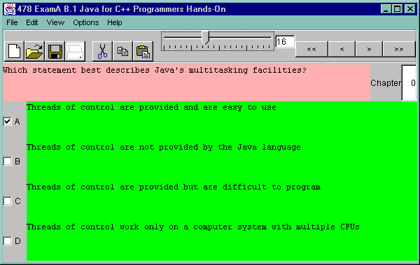

As you can see, the main window provides many of the common operations. You can jump to any question either by typing its number or by dragging a slider, or process questions one at a time using the Next/Previous buttons.
But wait, there's more! The File menu lets you XXX
The Edit menu lets you XXX
And the View menu lets you see the Statistics...

We particularly like the Statistics report, which shows not only how many A, B, C and D answers there are, but also how many incomplete questions, questions with no answer, and questions with no Chapter Objective. This can be helpful in assessing new exams from authors, as well as for monitoring ongoing changes.
The version being shown here is a prototype, and lacks some important features. That does not mean it is a toy - it is a full-scale program developed using object-oriented programming models and techniques.
The limitations? First, the questions and answers have as yet no format capability, to allow keywords in bold, computer input in Courier, or whatever. Many of the editing capabilities (such as Find, and Cut/Copy/Paste) do not function yet in this version. But you can see - from the shaded menu items - the functionality that is planned.
As well, during the later stages of development, we can work with the publications team to add or change functionality.
TestEdit can directly print a draft of the exam. This will not get mixed up with what we send the students, because it is clearly marked as being a draft. It shows the exam and the correct answers, and is an ideal format for proofing by authors, TEs, and others.
TestEdit can save in its own format (see below). But it can also export a file to the web, so that you can run the questions interactively for Intranet/Internet delivery. The present version, already being used in some courses to provide review questions that the students can answer after each chapter, generates simple but adequate HTML. A later version will be component-based for better delivery with no cheating. The program can [soon] also generate Microsoft Rich Text Format documents that MS Word can open directly. And, it is planned to add the ability to generate a Sylvan Prometric file, so that exams can be sent directly to Sylvan without any further manual processing (this capability depends on obtaining the proprietary file format that they use). Because TestEdit is object-oriented, it is fairly easy to add new file formats.
Now you no longer need to worry about authors who work on different computing platforms than your central publications department. TestEdit is totally portable to any modern computing platform. While the standard version is a native MS-Windows 95/98/NT binary, the included Java binary can be run on MS-Windows, Macintosh, Solaris, Linux, OpenBSD, Novell, or any other Java-enabled computing platform. The software installs easily using standard installation tools (InstallShield on MS-Windows and InstallAnywhere on Java).
The program's native file format is not RTF, nor a proprietary binary file like an MS-Word document, but a` structured text file format. Authors who prefer to work in existing tools can prepare input using vi, emacs, perl, WordPerfect (save as Text), or any other edtior of their choice, and need only validate using TestEdit before sending the files to your publications department.
TestEdit is the answer to all your examination editing problems. Buy it now! Contact Ian Darwin at Darwin Open Systems, http://www.darwinsys.com/.